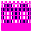
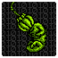
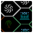
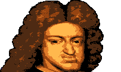

↑¡Haz clic!↑
Aquí está todo lo que he hecho relaccionado a la creepypasta de Godzilla Monster of Monsters (NGC), hecha por CosbyDaf.
| Cosas Descartadas | Capturas viejas | THE BOARD |
|---|
Lo principal aquí es NES Godzilla: Wrong Way, mi propia "fanpasta" que empezó siendo un what-if
de Godzilla Replay
(secuela de la historia orignial), y que ahora se esta volviendo algo más propio.
| Vídeo | Comentarios |
|---|---|
| No tengo mucho que decir del prólogo, solo lo hice para dar un poco de contexto antes de GLACIER. La voz del principio no es, Marta. Simplemente usé en ambas la misma voz del loquendo porque pienso que queda bien. | |
|
Como mencioné en la descripción del vídeo original, la primera mitad de GLACIER, hasta la pelea de TEXTALAD si no recuerdo
mal, se remonta a 2019. En ese momento compartí varias versiones viejas de capturas por el server de discord de NGC, hasta
que, de un día para otro, fuí echado de este sin aviso alguno. Esto me desmotivó bastante, ya que ese era el único sitio
en el que compartía el proyecto, por lo que lo dejé cogiendo polvo en mi carpeta de proyectos durante años. Entre esto y
que no había noticias de nuevos proyectos en el horizonte, hizo que me distanciara del tema en general. Mi interés volvió con la salida de la primera parte del capítulo 6 de replay, y con eso, mi interés con el tema. Tras darle varias vueltas a ideas, y después de subir el video de la teoría de los jefes de replay, decidí revivir Wrong Way, en un principio solo completando el primer capítulo. Sobre la segunda mitad, quitando el templo del silencio y las peleas de DOGORA y LETHAR, no sabía muy bien que hacer, por lo que hice el cambio de ambiente a los 2 niveles restantes. En un principio pensé en hacer que DESOLATE AREA solo fuera la parte de las serpientes del fondo, lo que acabé utilizando para KRONE con unos retoques. |
|
| KRONE es una transición. Todo lo que tiene este capítulo es lo que tenía en mente a futuro para esta historia como un what-if (salvo una cosa que seguramente aparecerá más adelante). Tras GLACIER estaba dividido en como continuar esto, por un lado quería hacer algo más… propio, hecho desde cero con el puñado de ideas para mundos que tenía en mi cabeza desde hace años y apuntados por ahí, pero tampoco quería dejar a GLACIER como un “one-shot”, ya que también quería jugar más con la idea del what if. Por lo que decidí hacer las 2 técnicamente, siendo este capítulo el final de la partida de Carl, tras lo cual podría volver a empezar con Marta. Esto no quiere decir que estos dos capítulos no aporten nada a futuro, elementos de estos aparecerán tarde o temprano como REDHORN, pero no de forma convencional. | |
| Otra razón para el cambio de rumbo de Wrong Way era el poder escribir un personaje completamente nuevo. Una de las cosas que más me rallaba a la hora de escribir los 2 primeros capítulos era intentar mantener el personaje de Carl. Y aunque eso me lo haya quitado de encima, ahora tendré el reto de hacer que se note que Marta es alguien diferente, más allá de ser hispanohablante. | |
| Estoy tentado en hacer esto más accesible, al final del día es un elemento de la historia importante y la primera señal de que hay algo raro con Marta. Pero por otro lado, el hacer esto público directamente mataría el gimmick de este y el otro vídeo... ¿De qué hablo? Abre la imágen a la izquierda. | |
| Quería que NIHON fuera un mundo bastante genérico, pero con detalles chulos que lo hiciera memorable. Todo en este mundo lo pensé para ser algo sencillo en lo que pudiera empezar, ya que este es el salto de editar sprites y capturas a hacerlos yo mismo. Tampoco hay muchas cosas que haya hecho yo por completo siendo honestos, y abusé mucho del uso de imágenes comprimidas para los fondos pero bueno, por algo se empieza. Por otro lado, me sorprende lo mucho que me terminó costando sacar el capítulo, a parte de algunas cosas descartadas, una de las partes que más me costó terminar fue el CAÑÓN SATELITAL, sobre todo la antena. Tenía miedo que a la gente no le gustara el cambio de rumbo en la historia, así que me alegra la buena recepción del capítulo. | |
|  | ¿Ese es... Carlos II, el Hechizado? |
{kind=link}